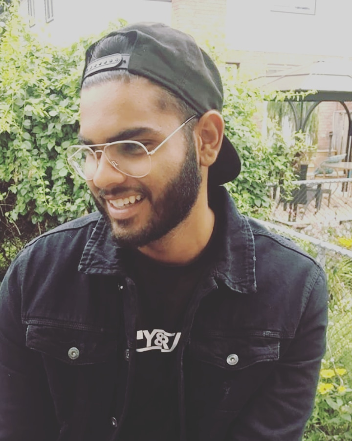

2018 in Less Than a Second
Photography blog, jan 2, 2019

We lead a strange life as photographers. It’s an anxious one, to be sure. We anticipate a job, a moment, a peak of action. We worry endlessly about missing it, without, often times, completely knowing what “it” will be. We have technical stuff to brood over–focus, exposure, lens choice. We see something potentially significant out there in the world, put our camera to our eye, and are about to actually do it right, and our view is blocked by a passing bus. We are shuttered, more than occasionally, from the desired scene by events beyond our control.
“Beyond our control” is an unfortunately accurate, merciless phrase photographers live with constantly. It is part of our lives and ongoing angst, a Sisyphean boulder permanently attached to our slumped and aching shoulders. We don’t control the weather, or, often times, the quality of the light. We rarely are in control of our subjects’ schedules, moods or whims. We are often unable to orchestrate access in an optimized way. The budget rarely approaches the level of what our imagination might be. Remember Han Solo’s rejoinder to the youthful Luke in the first Star Wars, when Luke tells him rescuing the princess would bring a reward that would be, “Well, more than you could imagine?” Han replies, “I don’t know. I can imagine quite a bit.” That’s us. We imagine on a great scale. And it often remains….imagining. So it goes, as Mr. Vonnegut wrote all those years ago. We fret endlessly about all the attendant difficulties associated with our art and craft. It’s ceaseless. It percolates in the night, intruding into our dreams in evil fashion, often ruining a night’s sleep. And, the hell of it is, those pre-job worries that vex us are nothing compared to the post-job, moment-I-missed, or things-I-shoulda-done-better purgatory that inevitably awaits us when we launch our cards into the reader. Whoo, boy, that’s when the crankcase of our mind, ego, hopes and dreams really ruptures, spewing shrapnel through the already thin veneer of our confidence and, potentially, through the even less fortified state of our finances.
NEW DOCUMENTARY SERIES: THE SKIATHOS KITTENS, ALL 3 PARTS NOW LIVE!
videography blog, Feb 2, 2019

It’s no secret that I like cats, well I like all animals but cats are my favourites. I am sure I could have become super rich by just making daft cat videos from Youtube instead of what I chose to do with my career but that doesn’t mean cats don’t feature in my work sometimes. I am sure if you watch my reviews you will see my cats Bertie, Percy or Noodle pop up sometimes. I have made two actual cat documentaries though…PROPER cat videos! They were both made to help a charity really close to my heart, the Skiathos Cat Welfare Association, in their urgent fundraiser appeal to keep going. I made the first film in January of this year and published it the following month. It told the story of the charity, what they do for the cats of the Greek island of Skiathos and much more. It was mostly filmed with the Canon C200 with some Sony A6500 & A7RIII in there too alongside drone footage using the DJI Mavic Pro.
I have just finished my follow up film which continues their story but this time follows them on their day to day work where they have to rescue kittens in desperate need of help. This was shot with the Sony NX80 and Parrot Anafi Drone. Additional footage was with the GoPro Hero 6, Hero 5 session, Mavic Pro (archive) and Sony A7RIII
About Me
Lovish Arora (Lovi) Designer, videographer Lovish finished his degree of Computer Engineering in India. After working in his field, he soon realized that it’s not really for him. Lovish from the childhood had interest in Music and want to become a hip-hop artist. Where everyone in his family thought it’s a bad idea for him to leave his field and went into music industry his sister always trusted him and encouraged him time to time. With her support and well-wishes, and his effort and enthusiast approach he made a YouTube Channel in which he ends up putting some mind-blowing beats and videos. Soon after that a lot of artist and musicians start approaching him with offers and wanted to work with him. Lovish love to wander with his friend in leisure time and he loves to cook food. Lovish had made video contents and shoot the music video for harsh rawal’s project.
Popular Post
.jpg)
.jpg)
.jpg)